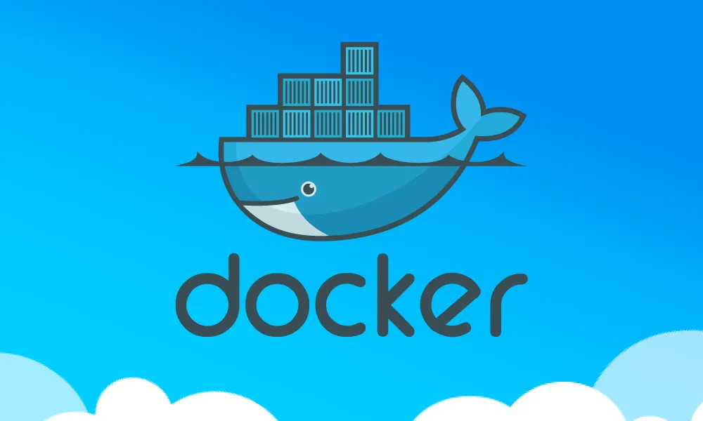
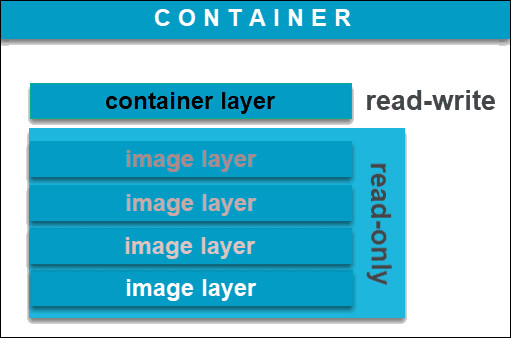
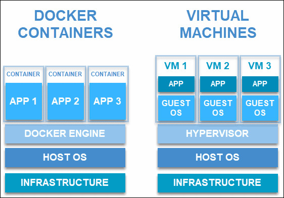
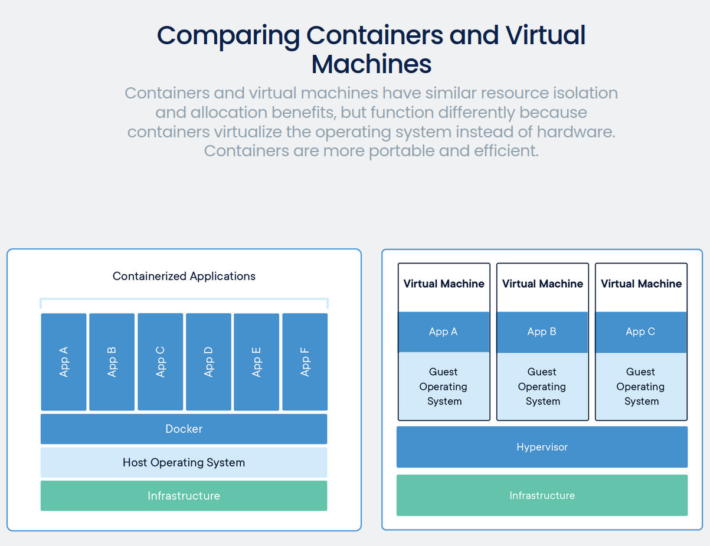
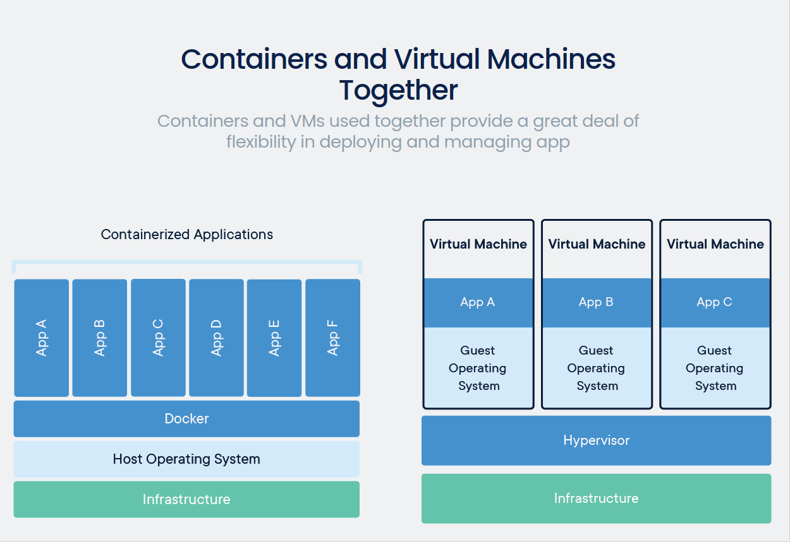

What is Docker and Containers?
Docker is an open-source software designed to facilitate and simplify application development. It is a set of
platform-as-a-service products that create isolated virtualized environments for building, deploying, and testing
applications.
Although the software is relatively simple to master, there are some Docker-specific terms that new users may find
confusing. Dockerfiles, images, containers, volumes, and other terminology will need to be mastered and should become
second nature over time.
What is the difference between a Docker image and a container?
What is a Docker Image?
A Docker image is an immutable (unchangeable) file that contains the source code, libraries, dependencies,
tools, and
other files needed for an application to run.
Due to their read-only quality, these images are sometimes referred to as snapshots. They represent an
application and
its virtual environment at a specific point in time. This consistency is one of the great features of Docker. It
allows
developers to test and experiment software in stable, uniform conditions.
Since images are, in a way, just templates, you cannot start or run them. What you can do is use that template
as a base
to build a container. A container is, ultimately, just a running image. Once you create a container, it adds a
writable
layer on top of the immutable image, meaning you can now modify it.
The image-based on which you create a container exists separately and cannot be altered. When you run a
containerized
environment, you essentially create a read-write copy of that file system (docker image) inside the container.
This adds
a container layer which allows modifications of the entire copy of the image.

You can create an unlimited number of Docker images from one image base. Each time you change the initial state
of an
image and save the existing state, you create a new template with an additional layer on top of it.
Docker images can, therefore, consist of a series of layers, each differing but also originating from the
previous one.
Image layers represent read-only files to which a container layer is added once you use it to start up a virtual
environment.
What is a Docker Container?
A Docker container is a virtualized run-time environment where users can isolate applications from the underlying
system. These containers are compact, portable units in which you can start up an application quickly and
easily.
A valuable feature is the standardization of the computing environment running inside the container. Not only
does it
ensure your application is working in identical circumstances, but it also simplifies sharing with other
teammates.
As containers are autonomous, they provide strong isolation, ensuring they do not interrupt other running
containers, as
well as the server that supports them. Docker claims that these units “provide the strongest isolation
capabilities in
the industry”. Therefore, you won’t have to worry about keeping your machine secure while developing an
application.
Unlike virtual machines (VMs) where virtualization happens at the hardware level, containers virtualize at the
app
layer. They can utilize one machine, share its kernel, and virtualize the operating system to run isolated
processes.
This makes containers extremely lightweight, allowing you to retain valuable resources.

Docker Images vs Containers
When discussing the difference between images and containers, it isn’t fair to contrast them as opposing
entities. Both
elements are closely related and are part of a system defined by the Docker platform.
If you have read the previous two sections that define docker images and docker containers, you may already have
some
understanding as to how the two establish a relationship.
Images can exist without containers, whereas a container needs to run an image to exist. Therefore, containers
are
dependent on images and use them to construct a run-time environment and run an application.
The two concepts exist as essential components (or rather phases) in the process of running a Docker container.
Having a
running container is the final “phase” of that process, indicating it is dependent on previous steps and
components.
That is why docker images essentially govern and shape containers.
From Dockerfile to Image to Container
It all starts with a script of instructions that define how to build a specific Docker image. This script is
called a
Dockerfile. The file automatically executes the outlined commands and creates a Docker image.
The command for creating an image from a Dockerfile is docker build.
The image is then used as a template (or base), which a developer can copy and use it to run an application. The
application needs an isolated environment in which to run – a container.
This environment is not just a virtual “space”. It entirely relies on the image that created it. The source
code, files,
dependencies, and binary libraries, which are all found in the Docker image, are the ones that make up a
container.
To create a container layer from an image, use the command docker create.
Finally, after you have launched a container from an existing image, you start its service and run the
application.


Conclusion
Once you understand the process of creating a container, you will easily recognize how different images and containers are. After reading this article, you should now have a good understanding of what a Docker image is, what a container is, and how they are connected.